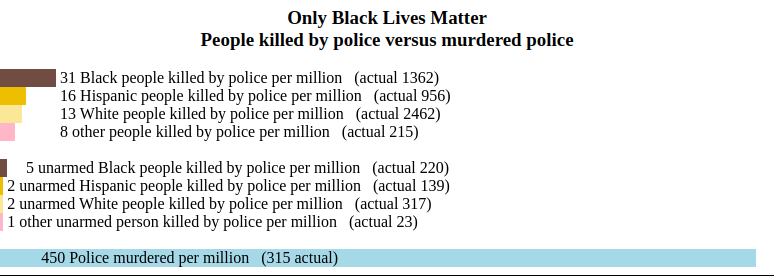
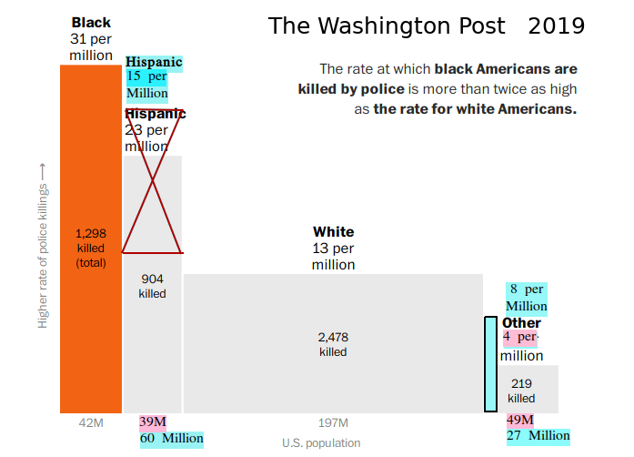
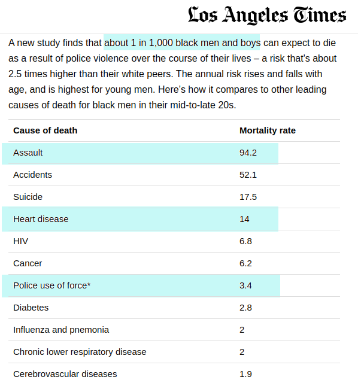
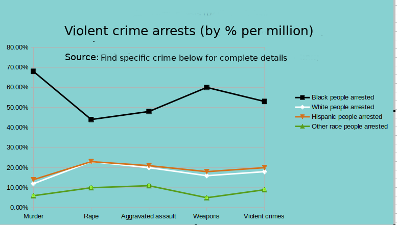

Black Lies Matter
Speak out, not because I ask
but because it's the right thing to do
Email BlackLiesMatter@protonmail.com Free use Apache v2 license
Racism against the police is still racism
You're racist because of "Black Lives Matter" deception
The Washington Post does not want you to realize that police are murdered at 90 times the rate of unarmed blacks killed by police and 15 times the rate of armed blacks killed by police. The Washington Post felt black violence is irrelevant and that blacks being killed by police at 2 times the rate of white people clearly does not imply systemic police racism and excessive police violence.
 
Black Lives Matter is not about saving black lives
Black Lives Matter has lost sight of their true goal. If they were truly about saving and improving black lives, then they would support gun control. 7,000 black people are murdered by gun each year. You would save more lives in 1 year than you could possibly save in 100 years by defunding police.
|
Most wars only last 5 years Around 45,000 black people are murdered over a 5 year period Only World War II and the Civil War had significantly more American deaths |
Some black people are against Black Lives Matter
You'll see facts and data below but you need to hear first hand from some black conservatives. Ex-officer Tatum has a large following, is a public speaker and appears on news programs. The following video is 2 hours where he and 3 guests discuss current topics such as Black Lives Matter. They speak about children and babies being murdered. Violence and the hardships of living in a black community that cannot be fixed by Black Lives Matter. While watching the video, I want you to think about his friends. If he has 1,000 white male friends, then he expects 1 will be murdered during his life but if he has 1,000 black male friends, then he expects 27 to be murdered during his life.
Americans want to help the black community but nothing will help until the black community is willing to fix the violence.
A few famous black people talk about racism.
Let the book burning begin

To hell with American liberties, freedoms and democracy. Black people will re-write history when libraries and schools re-open. For now, black people will settle for the destruction or removal of statues and memorials. They'll settle for the removal or destruction of art that they deem inappropriate. They will soon Facebook postings they deem inappropriate while spreading hate about police, their families and white America. They'll settle for censoring social media for anything the deem inappropriate. They'll settle for dictating company polices to meet their requirements.
When did black people earn the right to rule the country and rewrite american history!
My fact finding turned into lies, deceit and very likely conspiracy
Like you, I was disgusted by George Floyd's death which made me more sensitive to Black Lives Matter. I trusted the news media reports until I saw that Washington Post graph (republished by news agencies around the world such as the German news program Tagesschau). I found an obvious error that started me checking some of the facts.
1/2 truth + 1/2 truth ≠ truth
One error turned into an avalanche of deception. I found that Black Lives Matter is completely deceiving us. Lies of omission are still lies. Nearly everyone is participating in the deception:
- Black people: An example is the 100 black VA hospital employee's demanding management be fired because of black discrimination at the hospital. Any reported discrimination will be vigorously handled by the "Office of Resolution Management, Diversity & Inclusion" and protected by the "NO FEAR ACT". How can black employee's blame management when they couldn't be bothered to report discrimination!
- Companies: Apple CEO declaring he will fight discrimination within Apple but he obviously never discussed Apples policies with the HR department. The EEOC requires companies eliminate all forms of discrimination. I know for a fact that most companies take this very seriously.
- Universities: their deceptions were the most appalling. These so called scholars write research papers specifically to be used by Black Lies Matter. For example, the research paper "Risk of being killed by police use of force" says it's about "risk" but the only risk discussed is being black! Apparently having a gun is not a risk factor.
- News media: They use exagerated number like 1,200 black deaths instead of saying 40 unarmed black deaths each year or 250 armed black deaths each year. They are using horribly flawed information to specifically prove Black Lies Matter.
The truth is that racism is being blown out of proportion by black people. Sadly there are bad people in the world and racism exists but the destruction of democracy and America is being led by lies and deceit that are far more destructive. I'm appalled we can't get truthful information because people are too passionate about Black Lives Matter.
To help you find the complete truth, I've included data, facts, information and sources.
The Washington Post falsely claims "overwhelming evidence"
The Washington Post ignores it's motto "Democracy dies in Darkness" because they are diehard Black Lives Matter supporters. Articles like "If you don't believe systemic racism is real, then explain these statistics" claim "overwhelming evidence" but I'll show much of this evidence is either fabricated or woefully incomplete.
From this graph, you clearly see black and hispanic genocide by the police.
Really sly. Their fact checkers ignored the hispanic population error. After using the correct population, Hispanics are very similar to whites and other races are lower than whites. Simalarly, they never mention on the graph that the numbers are 5 years total. Are they saying police are only racist against black people? Even worse, are they only racist against black men?
80% of the people killed by police are armed and considered dangerous. New York is reducing it's police force which will put police lives in a lot more danger. Black people can expect their situation to get worse because police won't be willing to take the risk.
Everyone forget's police are involved. In the previous graph 80% of the people killed by police had a weapon (armed). George Floyd would be in the 20% that did not have a weapon (unarmed). More important is to consider police that die and get injured in these confrontations.
|
45,000 black people were murdered during this time only world war II and the civil war had significantly more American deaths |
People killed by police versus murdered police
Black Lives Matter insisted these graphs be per capita for 2015 to 2019. Dividing these numbers by 5 makes them much smaller and using real numbers per year puts it more into perspective. Let's look at a few.
272 armed and 44 unarmed black people killed by police each year
Because of Ferguson, unarmed black deaths fell from 2015 to 2019 (61, 49, 35, 29 and 26).
492 armed and 63 unarmed white people killed by police each year
Here are the data sources. If you can multiply and divide, then you can verify the numbers from these sources. Decide for yourself if you can trust Black Lives Matter.
Sources:
Important note: The mapping police violence database appears to be better researched than Washington Post database.
Important note: Just like the Washington Post graph, these graphs are for 2015 to 2019.
multiple FBI reports 2015 to 2019: statistics on law enforcement officers killed in the line of duty
select race, count(distinct(name))
from `mappingPoliceViolence.org`
where date>=2015 and date<=2019
group by race
select race, count(distinct(name))
from `mappingPoliceViolence.org`
where unarmed not like 'Un%' and date>=2015 and date<=2019
group by race;
select race, count(distinct(name))
from `mappingPoliceViolence.org`
where unarmed like 'Unarmed' and date>=2015 and date<=2019
group by race;
LA times 2019: "Getting killed by police is a leading cause of death for young black men in America"
- As a Black Lives supporter, you are outraged that so many young black people are killed by police
- A sensible person is horrified that for black men between 25 to 30 years old, the #1 cause of death is MURDER.
- A sensible person is horrified that the #1 cause of death for black children is MURDER.
- A sensible person is horrified that 35% of the black children deaths are MURDER
- A sensible person finds that unarmed black people killed by police" is not considered a leading cause of death..
- A sensible person is concerned you are only outraged by armed black deaths which is tragic but a lot more understandable than unarmed black deaths.
- How many 25 year old black men die from heart atack which is 4 times more likely than being killed by police
Additional source: CDC health equity.
Black arrests are NOT based on race
Violent crimes such as murder exclude the possibility of racism, black tax and white privilege. Since all other types of crime follow the same pattern for black and white people, the police are arresting black people based on crimes and NOT "systemic police racism". Decide for yourself by looking at all the FBI arrests data and graphs.
This small quick look shows proof that hispanics and other races don't experience excessive discrimination claimed by black people.

Source: FBI arrests data and graphs
Conspiracy, ignorance, fact, fiction or opinion
If all you look for is racism, then racism is the only thing you will find
To this point, you've seen errors that could be claimed as mistakes or not relevant even though they clearly are relevant. There is so called evidence that has clearly been fabricated. Some of the authors could probably be sued for libel by the police since there is absolutely no evidence of systemic police racism. You can decide for yourself.
Obama, Universities, professors, the Washington Post and various governmental departments appear to have participated in denying Americancs of their liberties, destory democracy and causing riots. Most hid their contributions to create this situation.
Conspiracy or ignorance? Research paper 2019
"Risk of being killed by police use of force"
Anyone claiming police racism from this research paper has committed libel. The word "Racism" has been intentionally omitted. The only conclusion claimed is "nontrivial lifetime risk of being killed by police". A single death is never considered trivial. It is the reader who interprets this as racism.
There is little doubt that this paper is a conspiracy. The only conclusion drawn was specifically for black people.Curious that professors from 3 universities considered race and age are the only risk factors. Children could easily name more risk factors such as guns.
Curious how they manipulate the numbers. For instance, life course means to divide by 70 years to get a yearly number. Confusing numbers are used heavily in this paper.
Curious this paper does not mention 80% had weapons.
Curious this paper talks about police violence but does not mention black violence. For instance, over the "life course" of a black boy, 1 in 37 will be murdered. Talk to 2 classroom's of black children about risk, and you must tell the boys one of them will be murdered.
Curious that the NIH sponsored this research paper.
Curious this paper came out 2 years after Obama was president.
Curious that the media's most used supporting documentation is this research paper which does not prove a single thing or come to a real conclusion about race or racism.
Is this paper criminally responsibile for the riots and destruction that is occurring today? At the very least, it should be held criminally responsible for inciting civil disobedience, libel against every police officer who is not racist and endangering a democratically appointed police force.
Conspiracy or ignorancce
1 in every 1,000 black boys can expect to be killed by police
As Black Lives Matter puts it, "Over the life course, about 1 in every 1,000 black men can expect to be killed by police". Clearly this must be black genocide by the police. You can hold your head high because you are fighting the good fight. Black boys should run up and thank you for saving so many black lives.
Source: Source: CDC NVSR Deaths: Final Data
Most people have tunnel vision and only see the obvious. Black Lives Matter tells the parts of the truth they want you too see. Systemic police racism is proven by "Over the life course, about 1 in every 1,000 black men can expect to be killed by police".
- They say "over the life course" instead of simply saying "over 70 years".
- "black men" should have been "black boys" but that would raise questions.
- They left out the word "average" black boy so they could say 1 in 1,000. 80% of these deaths were due to attacking the officer. These are NOT the black men you can save. Disarming police will definitely reduce these black deaths but it will increase police deaths.
- The average black boy won't have a gun in his lifetime, so his risk is 1 in 12,000. These are the black boys / men you are trying to save.
- You ignored that 1 in 37 black boys will be murdered. That's 324 in 12,000. Be proud because you saved 1 black man from the police and allowed 324 black men get murdered. You should be really proud you reduced the police force which will result in more murder. Be proud the life you saved is now being murdered.
- 35% to 50% of the murders go unsolved. You should be really proud you reduced the police force and allowed more murders to go unsolved.
- 1 in 1,000 white boys will be murdered. Who is the racist here because 27 black boys will be murdered for 1 murdered white.
Black Lives Matter usually tells the truth. You need to decide if it's a complete truth you can trust. Ask yourself if your blaming racism when the problem is violence.
Conspiracy or ignorance? Research paper 2020:
racial disparities in police stops across the
United States
Anyone claiming police racism from this research paper has committed libel. Again, the word "Racism" has been intentionally omitted. The word "suggest" occurs 21 times which tells you they cannot draw any conclusion. The only conclusion claimed is "Creating a national database of traffic stops" but they never say anything about the database requirements or the information needed in the database. They say "‘veil of darkness’ masks one’s race" to insinuate police racism when it could just as easily be reduced fear, possibly police shift change or many other possible inferences.
Curious this paper was published 3 years after Obama was president.
Curious that multiple Obama advisers graduated from Stanford University.
Curious that these researchers are located at Standford University in Palo Alto but never compared policing between Palo Alto and East Palo Alto. East Palo Alto was the murder capital of the USA for a period of time. East Palo Alto currently has 4.3 times the violence of Palo Alto. Since black people have a lot of violence, these researchers could have easily gained first hand insight of the effect of violence on an officer's decisions and demeanor.Palo alto violent crimes is 1 in 901 versus East Palo Alto violent crimes is 1 in 209. More than 4.3 times the violence per capita.
Curious that for a research paper to be published, it requires a conclusion which they had to fabricate. They couldn't bother describing what that database needed. Why did so many professors bother to publish this paper, especially now that Black Lives Matter has become front page news?
This paper was written specifically to falsely support Black Lives Matter. This paper is not about how police choose who to stop. It is specifically trying to imply police are stopping blacks more often than whites so you will conclude racism. The simple fact is the #1 cause of black men under 44 is MURDER. You will see black communities have pandemic violence which requires more police who will be stopping more people.
Conspiracy or ignorance? research paper 2019:
"Racial Residential Segregation and Black-White Disparities in Fatal Police Shootings"
Anyone claiming police racism from this research paper has committed libel. Again, the word "Racism" has been intentionally omitted.
The conclusion is flawed: "Efforts to ameliorate the problem of fatal police violence must move beyond the individual level and consider the interaction between law enforcement officers and the neighborhoods that they police".
First flaw "neighborhood violence" is ignored when talking about police violence. Black neighborhoods are inherently dangerous because of pandemic black violence. 1 in 37 black boys will be murdered in an average life time. For black males under 44, the #1 cause of death is murder. Arrests for black murderers is 4.5 the rate of white murderers.
The second flaw is "neighborhood interaction". The first priority is officer safety in gun obsessed neighborhoods. 80% of the black male murder victims were shot by gun. Black people are arrested for firearms 3 times the rate of white people. These are not white privilege, black tax or racist crimes.
Curious this paper came out 2 years after Obama left office.
Conspiracy or coincidence?
Ex-president Obama
I don't have any direct evidence linking Obama to a conspiracy but there are too many coincidenses to ignore the possibility. Research papers and the Washington Post are directly responsible for spreading so much misleading information that has resulted in dissolution of democratically appointed police, denying Americans of their liberties and freedom's, falsely accusing police of racism, intentionally inciting riots, inciting civil unrest and other criminal activities.
Curious that multiple research papers were published before George Floyds death but a couple years after Obama left office. Also realize that no research papers before Obama's presidency hinted specifically to systemic racism.
Notice that during the Obama administration, the Washington Post located in Washington DC became a very active supporter of Black Lives Matter.
Obama felt that Black lives Matter is more important than truth and liberties. Motivated justification and Crowd mentality gave him the justification to knowingly plant fabricated evidence in support of Black Lives Matter.
If Obama feels justified to exagerate information to support Black Lives Matter, then you must seriously question the morality of people who feel equally justified. The end result has been the destruction of democracy, Riots and protesting are lasting weeks longer than Ferguson. It has destroyed "innocent until proven guilty".
Conspiracy or ignorance? Washington Post article:
"If you don’t believe systemic racism is real, explain these statistics".
It's appalling that the Washington Post was once a prestigious paper but can't do balanced reporting. They fully support Black Lives Matter but never mention the cost it has taken on democracy. Below, I discuss losing the freedom of speech, the demise of democracy and the loss of liberties we hold so dear. They are not capable understanding the research papers they claim as overwhelming evidence. Their fact checkers can't even check facts or maybe they can but they needed to prove a point.
Conspiracy or ignorance?
racial inequality by failing to hire Black people
Apple's black employee Tanya Faison says Apple is "failing to hire, promote or fairly pay Black people and people of color". This is a sentiment of many black people.
Most black people feel entitlement. In Tanya's case, she feels Apple's CEO Tim Cook must be part of the Black Lives Matter solution which has nothing to do with Apple. If she bothered to ask HR about diversity and discrimination policies, she would have found they are religously enforced.
Similarly at Facebook, management decided that freedom of speech outweighed the deletion of Trumps posts. Facebook employee's who support Black Lives Matter are using their entitlement to stage a virtual walkout.
Companies don't want employee's who feel entitlement. Look at mega-corporations in silicon valley (e.g. Apple, Google, Facebook, Twitter, Oracle, Intel and ...). They hire asians using H1B visas to avoid hiring black people because of their entitlement. They are not being racist. Employee's are hired to do a job, not dictate corporate policy.
By law, companies must have a diverse staff. Since entitlement does not work well in company culture, black people are often excluded because they are a bad fit. H1B visas are a hassle but mega-corporations get employee's who fit into their culture. Black people need to lose their entitlement to become more employable.
Source: Source: Wikipedia Santa Clara county and USA census
Conspiracy or ignorance?
racial inequality by failing to hire, promote or fairly pay Black people
Most company HR departments are trained and prepared to deal immediately with any type of discrimination. They are required by law to discourage all discrimination and they take it very seriously. In addition, employee's can file a discrimination complaint with the EEOC. It will be investigated and corrective action will be taken where necessary. To avoid dealing with the EEOC, most companies go to great lengths to discourage all discrimination. Anyone filing a discrimination complaint is protected from retaliation.
As for governmental agencies, they have similar similar protections for discrimination. For example, the VA has the "Office of Resolution Management, Diversity & Inclusion" which will seriously and vigorously handle that claim. Their only job is to deal with discrimination claims. Anyone filing a claim is protected from retaliation by the "NO FEAR ACT".
Conspiracy or ignorance:
Black privilege and white guilt
White privilege and the black tax has not existed for years. Instead, look at Apple and you easily see black privilege and white guilt. Apple's black employee Tanya faison is addament that Apple must play a role in Black Lives Matter and she certainly has not looked into a single corporate policy with regards to discrimination and diversity. CEO Tim Cook is yielding to black pressure to take action when his company already has policies in place to handle diversity and discrimination.
Conspiracy or ignorance?
Americans denied their constitutional rights
The fifth amendment to the American constitution is "due process of law". Americans can't hold Black Lives Matter accountable in court. There is no organization or person to be held culpable for crimes of this organization. There are thousands of criminal acts that will never be prosecuted.
Police officers are being fired without any due process. Obviously, the lead officer was in the wrong in killing George Floyd. The other officers were there but the extent of their participation is in question. They were in the impossible situation of not having any control but being held resposible. Any choice they made was going to be wrong. They were fired without any due process of the law.
Democracy is being ignored. The destruction and removal anything Black Lives Matter deems unacceptable. E.g. statues being removed without public approval.
At the demand of Black Lives Matter, governmental agencies ignore due process and innocent until proven guilty.
Conspiracy or ignorance?
overthrow of democratically appointed police force
Black Lives Matter is making false accusations against the police. They claim "systemic police racism" and black genocide by the police. Black Lives Matter can't be prosecuted for slander, libel, and defamation of character. I'm not a lawyer but I suspect there are many other laws being broken.
Stop being white guilted into believing bad information
Companies are declaring again they will fight systemic racism in their work place and around the world. These CEO's and presidents can't be bothered to ask about their company policies. Instead, they take responsibility which re-enforces black entitlement. These CEO's and presidents are not helping to make black people more employable. Instead, they are making the problem worse.
Passionate people are dangerous
Black Lies Matter is resulting in useless bureaucracy on top of existing bureaucracy that will only be more confusing. This will never help black people who can't use the existing bureaucracy.
You must be leary of people who are too passionate. Passion allows a normally trustworthy person to be untrustworthy (knowingly or unknowingly). "Black Lives Matter" enflames such great passion that you must view everything with extreme suspicion and choose with great care what you trust. I ask you to scrutinize everything about "Black Lives Matter". Sources are given as much as possible so you can decide for yourself. Typically, you must take a person at their word because they don't include sources.
Most powerful political party is now "Black Lives Matter"
6 California police officers shot in 2019 without a word from Nancy Pelosi. "Black Lives Matter" easily forces her to show them respect.
If racism is all you ever look for, then racism is all you will ever find
Standing against racism is a noble cause but noble causes can go horribly wrong. The world must never forget the noble cause "common good" known as the NAZI political party.
Fox news: Carlson Tucker talks about the transition to a political party. This political party has great virtues but it also has great flaws. It is unorganized without any real leadership. It's a mob that is changing American politics. There is great risk for misuse and abuse.
Police aren't committing black genocide
This is pandemic violence within the black community
As you've seen, police are not killing black people because of their race. Sadly, the black community has been dealing with pandemic violence for years. The exhaustion of dealing with this violence has them lashing out at anyone they can blame. The police were intentionally given as the lamb to this slaughter.
San Jose Policemen fired for exercising their freedom of speech
Where is the ACLU for this agregious denial of their freedom of speech. They lost their jobs for speaking their mind. Many may not like what these police officer said but are we saying there is absolutely no merrit? Look at some of their their remarks which may be offensive but actually have value. Worse yet, these were private posts and someone did a screen copy to post these on the internet.
Black Lives Matter protestors are the "enemy"
For police officers, protestors are the enemy. Police are losing their rights, asked to take more risk and risk jail for making the wrong decision in very difficult circumstances. How are they not the enemy?
Black Lives Matter protestors are "un-american"
Look at the ACLU section above. People in this movement specifically abuse our rights to achieve their goals. Additionally, these policemen lost their jobs because they exercised their freedom of speech by government officials who don't want to anger these protestors. Denying people their civil liberties is un-american.
Black Lives Matter protestors are "racist idiots"
Protestors are certainly racist against all police. They want to put the police into more danger. Every questionable decision now results in immediate criminal charges without looking at the evidence. Many are willing to abuse policemen without cause.
The real question is whether protestors are idiots. They ignore that 1 in every 37 black boys will be murdered. They ignore that police die 30 times the rate of black men. They ignore violence in the black community (e.g. 9,000 murders per year). They ignore they could save 7,000 black people murdered by gun each year by supporting gun control. They ignore that there are existing solutions against racism. Protestors ignore there is always 2 sides to any conflict and they are guilty of ignoring the other side. Protestors are certainly ignorant. As for being idiots, the jury is still out. Source: these items are discussed below in detail.
“Black lives don’t really matter.” and “I say re-purpose the hijabs into nooses.”
These are very racist and derogotory but remember that "Black Lives Matter" is equally racist and derogotory. This phrase now evokes white lives don't matter and white people will need to die for their cause. It's very close to being libel because it identifies all police as being un-american. Clearly black people feel there is meaning associated to the confederate flag so they must agree that Black Lives Matter has meaning to white people. Legally, all postings regarding "Black Lives matter" must be censored if they censor opposing points of view.
We've established that Protestors are ignorant
They should be part of the solution instead of complainers
Protestors need to be the solution instead of demanding others be the solution. Make a meaningful contribution! Look at some examples how protesting is often meaningless.
If you are protesting for the 100 black people who claim discrimination at Kansas city VA medical center then help these black people report this discrimination to the "Office of Resolution Management, Diversity & Inclusion" which will seriously and vigorously handle that claim. Their only job is to deal with discrimination claims. If the black person is afraid of retaliation, then teach them about how the "NO FEAR ACT" protects them.
If discrimination within any federal agency is not being handled correctly, then demand the office of diversity and inclusion do their job correctly. This is their one and only job. Stop demanding a complete change in management when the office of diversity and inclusion can't do their job correctly. You are being the racist that you are fighting.
If you are protesting the police, then reduce the need for police to confront black people. You could demand gun control because 7,000 black people are killed by guns each year. You could support gun control because 56,000 black people are arrested for weapons each year. You could save black children from being murdered (#1 cause of death at 35% of the black child deaths). You could save thousands of black people under 45 years old by finding a solution to MURDER (#1 cause of death for black people under 45 years old).
If you are protesting racism within white people, then teach black people how to ask instead of demand change. Below, I mention the black teaching assistant who doesn't realize "Some white people may have to die" is a very bad thing.
If you are protesting companies , then help black people understand how to deal with racism in their company. Rarely will companies tolerate racism in their workplace. Black employee's like Apple's Tanya Faison says "she’s skeptical of these expressions of solidarity from corporations that for years stayed silent on systemic racism while perpetuating racial inequality by failing to hire, promote or fairly pay Black people and people of color". Most companies have procedures for discouraging racism. Clearly someone needs to talk to her about diversity at Apple. These companies have worked hard for years but black people see this as "years of silence" and "systemic racism".
You could teach black people the difference between real and perceived racism. Tanya did not state a single act of racism against her at Apple. She does not say how often or how Apple did not take any steps to correct the situation. She just says there is "system racism" at Apple and that we must take here word for it. The psychology terms Motivated justification and Crowd mentality explains how our perception is different from reality.
Black people protest but never take real action
Real american's use the court to protect their rights. If you are experiencing discrimination that is not being resolved, then be a real american and protect your rights against discrimination. While you have the right to protest, it is nothing more than blaming others and telling them to fix the problem. Racism will only end when black people empower themselves instead of entitling themselves. Use the courts to protect everyone from discrimination.
Most blacks believe "for years stayed silent on systemic racism while perpetuating racial inequality". This is ignorance and black entitlement.
Black people are in complete denial about the monumental achievements against discrimination. They think america has stayed silent for years. They can't admit any progress otherwise they would not have anyone to blame for their problems within the black community such as pandemic Violence. Violence so pandemic that blacks are murdered about 5 times the white murder rate.
Most company HR departments have been trained to deal with discrimination. They have company policies to quickly and effectively deal with all discrimination. There are laws to ensure companies eradicate all discrimination and ensure they have a diverse workforce. If companies fail to comply, then anyone who experiences discrimination needs to file a complaint with the EEOC.GOV. This government agency's only job is to eradicate discrimination and they will take the appropriate action for all claims of discrimination. In fact, there is a law that protects anyone who files a complaint from retaliation.
All government agencies are required by law to resolve all issues involving discrimination. Each has a department to correct all discrimination. For instance, the VA has "Office of Resolution Management, Diversity & Inclusion" Anyone who files a complaint is protected by the "NO FEAR ACT".
Today's meaning of "racism" and "Black Lives Matter"
Today, "racism" or "Black Lives Matter" evokes black genocide by police and police brutality. Are we blaming a group of people for the sins of a few? Are we denying democratic rights? Are we supressing freedom of speech? Are we supporting brutality and terrorism? Have we forgotten why "innocent until proven guilty" exists?
We have become the racist we fight.
I ask you to consider what you are saying by using the words "racism" and "Black Lives Matter" in todays world. Below is a quick list of facts and effects. Americans support your freedom to embrace "Black Lives Matter" but we hold you responsible for immorality caused by your choice. Ignorance is not an excuse.
Social media makes You, a leader of the
"Black Lives Matter" political party
Social media and the internet has given you a powerful voice. Every share you make has your powerful of approval. Look at the facts below and ask yourself if you share any guilt.
If and when you realize "Black Lives Matter" has
crossed the line that must never be crossed
Be vigilant as a supporter of "Black Lives Matter" because you've accepted that responsibility. Always ask if lines have been crossed that should never be crossed. Ask yourself if you are guilty of not speaking against something that has become far worse than racism.
Should ACLU be renamed BACLU?
ACLU.org states they are the nation’s premier defender of the rights enshrined in the U.S. Constitution. The ACLU has protected American liberties for 100 years and in last 3 months, the ACLU has ignored the loss of liberties they fought to ensure and we hold dear.
Where is the ACLU when in the name of "Black Lives Matter", millions could have their Freedom of speech denied, be censored, denied the opportunity for a fair trial and probably denied other freedoms and rights.
An avid believer in Freedom of speech, Facebook management is being extorted by several companies to suppress controversial posts! Even some facebook employee's have stated "There isn't a neutral position on racism". Facebook management is correct that employee's can't be trusted with such decisions. The ACLU must speak out in support of Facebook Management otherwise it will be like twitter and others that suppress whatever they deem inappropriate.
The opposite is Twitter which ignores freedom of speech.
Google is extorting companies to remove disparaging "Black Lives Matter" content but they must leave Black Lives Matter content.
The ACLU is a racist organization. Don't they realize that the research papers only state "more blacks than white per capita"! By saying black people, they are ignoring "WHITE people are also being murdered and brutalized by police with near impunity". There is no evidence that demonstrates only black people are mistreated. For that matter, there is no evidence supporting "impunity". 1 in 1,000 is not impunity. 1 in 38 is impunity. They never mention that police are murdered and brutalize. As lawyers, don't they realize they shouldn't make unsubstantiated claims?
Obama, universities, professors and the government have fabricated research papers to deny the police of their liberties and freedom's. They are responsible for accusing all police of racism without a single fact. They are responsible for the spread of misleading information and drawing conclusions they know are not true.
For me personally, I lost my local farmers market because of coercion. They had a strict policy of "no politics" and yet were forced out of business when they would not make an exception for racism.
There are thousands of examples of "Black Lives Matter" being a non-democratic movement. Taco Bell being coerced into allowing "Black Lives Matter" attire. Closing down public streets illegally. Closing down freeways.
Quiz to find out if you are guilty of racism and support genocide
Is it fair to ask police to face more risk and not listen to what they say? UNO international murder rate table is a good indication of danger in the world. Rate the following from lowest to highest murder rate to find the black american community's ranking in the world. In this list, Japan has the lowest murder rate and Jamaica is the highest. At most, you will use 38 clicks. Start by clicking on the safest which is Japan. Remember, Jamaica is the worst.
The black murder rates were calculated from CDC NSVR deaths: final data 2017 because 2018 and 2019 are not yet available.
There are 230 countries but only 4 countries have a higher murder rate than black men in America. This will only go up with defunding the police and removing vital tools against extreme violence (e.g. guns). "Black LIves matter" says you must consider the police as the enemy. "Black Lives Matter" says you want unarmed police.
Missing freedom of speech in universities and colleges
Obama has said that universities and colleges are now about political correctness instead of free and open speech about controversial topics. School staff must be seen as BLM supporters. For years, every meeting my wife attended as staff must include a discussion on cultural inclussion and diversity. Professor John Ellis discusses how American universities are now a "one party campus".
Many black people believe "some white people must die"
Many black people have a good heart but they deal with pandemic violence. When dealing with pandemic violence all the time, violence will be the only solution they will see.
Most black people are good people but many feel spilling white blood will be necessary to achieve black equity as opposed to equality.
There's a big difference between pandemic violence and racism
To call this problem racism shows that we are ignoring the morality within the black community.
Over the years, we've become numb to the pandemic black violence and we no longer discuss this violence. The only thing that hasn't changed over the years is black violence. The graph showed the black community in trouble with it's morals. The numbers below continue to tell this story of extreme and excessive violence. For years, all attempts in lowering the violence have failed.
Black perception of racism is not the reality
The VA can't have a black racism problem and those protesting the VA clearly don't understand the safeguards in place for black employees. the "NO FEAR ACT" and the "Office of Resolution Management, Diversity & Inclusion" to vigorously deal with black minority issues.
Black people won't face reality. Racism is nothing like black people want you to believe. For example They will vigorously investigate any claim. Protesting at the VA discrimination claims at Kansas city VA medical center.Black people are a vigorously protected group by the government, companies, educational institutions and more. They've been protected for years.
The truth aboutBlack people have been a protected group for many years. Rarely will companies,
This sounds unbelievable but there are many examples that you shouldn't ignore. BLM considers all democratically created solutions to be "white man" solutions. Only solutions coming from BLM are acceptable
Consider the discrimination claims at Kansas city VA medical center. Hundreds of BLM supporters are calling for the complete replacement of VA management and an investigation into claims of racism for the last 10 years. Black people claim to be afraid to speak out for fear of being disciplined.
Black employees at the VA are protected by the "NO FEAR ACT". Black employees at the VA have the Office of Resolution Management, Diversity & Inclusion. Their only job is to deal vigorously and seriously with discrimination issues was created for black people to handle issues of discrimination.Any report of discrimination against black people are taken very serioussly and vigorously researched by . The form is very short. There is no excuse for 100 black people so far to claim discrimination now. This protest is complete nonsense and demonstrates black privilege.
The simple fact is that black people are so racist against white people, they will never accept any solution except complete replacement of management with BLM approved managers.
Black people are not looking for a democratic or fair solution. Actions speak louder than words. Black people must take appropriate actions instead of complaining.
Black privilege
Black people claim "white privilege" but there is very little or no proof that it exists.
What can be easily proven is "Black privilege":
- Meer mention of black, demands immediate attention within government institutions, educational institutions, businesses and by all Americans. In fact, mentioning other protected groups such as women, lgbtq and others. The only unprotected group is white.
- A few years ago, a colleague kicked in a door with a minor reprimand. A white man would have been fired immediately.
- Billions $ (if not trillions) spent to address black (and other) equity issues over the years.
- Flagrant breaking of the law without prosecution:
- OJ Simpson
- Extortion: There are thousands of cases such as taco bell face mask incident. I have personal knowledge such as my local farmers market being closed because they would not allow any type of political statement. The city revoked their permit because they would not support BLM.
- Attempted murder: There are thousands of cases. For instance, the poisoning of 3 police officers by shake shack employees with bleach. The officers were force to accept this as accidental improper cleaning of the machine that holds 100 servings but no one else got sick.
- Denying Americans access to public property: protest zones, taking over police precints, Protesting on freeways, protesting without permits, ...
- Destroying and defacing property.
- Various acts of violence such as setting fire, throwing rocks, ...
- Immediate firing of police.
- Local and state government immediate capitulation to black demands.
- Rewrite history that black people deem disparaging.
- Book burning is next. Currently removing statues, memorials and symbols that black deem is disparaging without consideration for anyone else.
- Speaking against BLM is met with immediate retaliation.
- A web search would easily return results in the thousands.
Summary of the police killing database and police deaths website
| Deaths by Police | ||||||
| 2015 | 2016 | 2017 | 2018 | 2019 | total | |
| Black | 305 28% |
278 26% |
272 26% |
253 24% |
259 24% |
1367 |
| Hispanic | 195 18% |
194 18% |
219 21% |
176 17% |
178 17% |
962 |
| Other | 58 5% |
64 6% |
73 7% |
147 14% |
221 21% |
563 |
| White | 543 49% |
531 50% |
502 47% |
485 46% |
406 38% |
2467 |
| Total | 1101 100% |
1067 100% |
1066 100% |
1061 100% |
1064 100% |
5359 |
Source: SELECT race, substring(date,1,4), count(DISTINCT(name)) FROM mappingPoliceViolence.org where substr(date,1,4) >= 2015 group by race, substring(date,1,4) limit 1000
| Unarmed Deaths by Police | ||||||
| 2015 | 2016 | 2017 | 2018 | 2019 | total | |
| Black | 61 34% |
49 28% |
35 30% |
29 18% |
26 19% |
200 |
| Hispanic | 42 23% |
34 20% |
32 28% |
32 20% |
27 20% |
167 |
| Other | 11 6% |
8 5% |
10 9% |
22 14% |
30 22% |
81 |
| White | 65 36% |
81 47% |
39 34% |
74 47% |
51 38% |
310 |
| Total | 179 100% |
172 100% |
116 100% |
157 100% |
134 100% |
758 |
Source: SELECT race, substring(date,1,4), count(DISTINCT(name)) FROM mappingPoliceViolence.org where (unarmed = 'unarmed' or unarmed like 'un%' or unarmed = '') and alleged_threat_level != 'attack' and substr(date,1,4) >= 2015 group by race, substring(date,1,4) limit 1000
| Police officers feloniously murdered | ||||||
| Source: http://odmp.org | ||||||
| 2015 | 2016 | 2017 | 2018 | 2019 | total | |
| Total | 54 | 81 | 56 | 65 | 54 | 315 |
Of the 800,000 police officers, very few officers choose to take someones life each year. For unarmed suspects, the number goes down by around a factor of 10. While these numbers are tragic, they tell us that officers make the correct decision most of the time in a situation that is extremely fluid.
Black people experience pandemic violence
| Black men experience more violence than white men Source: CDC health equity - leading causes of death for men |
| Homicide (murder) #1 (27.6%) black men age 20-44 |
| Homicide (murder) #5 ( 2.8%) white men age 20-44 |
| Homicide (murder) #1 (35.3%) black men age 1-19 |
| Homicide (murder) #4 ( 5.2%) white men age 1-19 |
Doing your own research
Carlson Tucker on "Black Lives Matter" is the larget most powerful political partyCarlson Tucker reporting on "Black Lives Matter" eliminating freedom of speech
2019 NIH paper: Risk of being killed by police use of force - basis for news articles
NIMH Director’s Statement on Racism at the NIH
LA times 2019: Getting killed by police is a leading cause of death for young black men in America
US News 2019: Deaths From Police Harm Disproportionately Affect People of Color
Washington Post 2019: What we’ve learned about police shootings 5 years after Ferguson
Analysis of police arrest data in Southern California reveals dramatic racial disparity CNN 2020: DOJ has all but abandoned broad police investigations
The Guardian 2015: Young black men killed by US police at highest rate in year of 1,134 deaths
CBS Sports 2020: Tragedy of George Floyd's murder hits too close to home for some black college basketball coaches
Black homicide victimization
On Covering Murder and Race, the Media Must Do Better
mappingpoliceviolence.org database (considered reliable)
mappingpoliceviolence.org unarmed deaths
Wiki about police use of deadly force
Wiki about Black Lives Matter
My conclusions from my research
- Like many others in the world, I am truly outraged by the death of George Floyd. The officer who murdered George floyd deserves to be held responsible but this does not mean all officers should pay for the offenses of a few bad cops.
- Some racism will always exist. We must stop proving systemic racism by a single incident.
- Our belief in systemic racism is stronger than our belief in god. We take both on complete faith but neither can be proved or disproved with the available facts.
- I now believe systemic police racism is being blamed for the underlying problem. Instead of racism, I believe that both the police and the black community are caught in a constant cycle of violence, fear, distrust and disrespect. This will only end when both sides become "we" instead of you and me. 5% of every officers time needs to be spent in real community activities without weapons.
- To my amazement, racially motivated police killing black people is now a complete myth. 800,000 officers being blamed for 30 unarmed black deaths per year.
- Eliminating all racism is impossible but we should never stop trying. The current approach no longer helps and we need a new approach. The proposed police reforms will put officers in more danger than ever. As black lives matter puts it, 5 black people per million were killed by officers compared to 1 white per million but they fail to mention that 331 officers per million were feloniously murdered during that same time frame. It's 66 times safer to be black than a police officer.
- "black lives matter" is NOT about saving black lives. Outlaw guns and you would save over 8000 black lives per year that are murdered by guns.
- Now is the time for black leadership. A leader who can heal the anger and frustration. A leader who can say what must be said. A leader who is impartial and will seperate fact from fiction. A leader who can restore the dream. "Black lives matter" is now an excuse for black people to remain a victim.
- The NIH, universities and colleges are failing us. The NIMH director (part of NIH) stated that the NIH only supports research that is part of the solution rather than part of the problem. This has lead to such misleading research (listed at the end) that the media is using as the basis for the their reporting. Additionally, universities and colleges are overrun with racial equality programs so they can say systemic racism exists within their organizations.
- systemic racism within the police force is completely faith based by black people. There is no evidence to prove or disprove it. I suspect that systemic racism no longer exists (psychology terms Motivated justification and Crowd mentality ).
- Hearts and minds have dramatically changed over the years but no one is willing to acknowledge that fact. We need to look at racism with fresh eyes. Adding inequality by the government has brought us as far as it can. We need to heal the hate and frustration that has festered in victims for so many years.